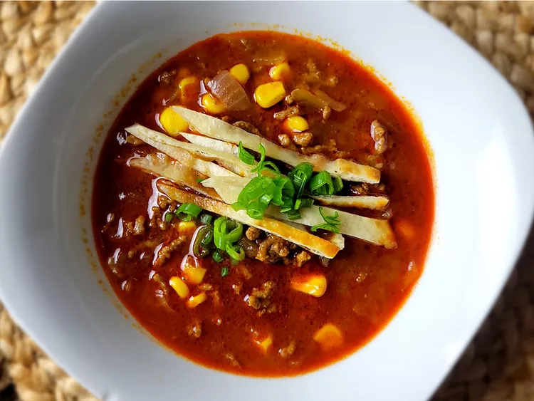

5 Ingredient Taco Soup

recipe
ingredient list
- 1 pound ground beef
-
1 (16 ounce) jar chunky salsa
- 6 cups beef broth
- 1 (1 ounce) package taco seasoning
- 1 (10 ounces) bag frozen corn
steps
- Heat a Dutch oven over medium high heat; add ground beef and cook and stir, using a wooden spoon to break up beef.
- Sprinkle in half of taco seasoning; mix well. Continue to cook and stir until ground beef is becoming browned and crumbly, about 5 minutes. Stir in salsa, slowly pour in beef broth, and mix well. Cover and cook until simmering, 5 to 7 minutes, stirring occasionally
- Stir in frozen corn and remaining taco seasoning. Return to a simmer, reduce heat to low, cover and cook 15 minutes more, stirring once halfway through cooking time.
- Stir once more, remove from heat, and serve hot.